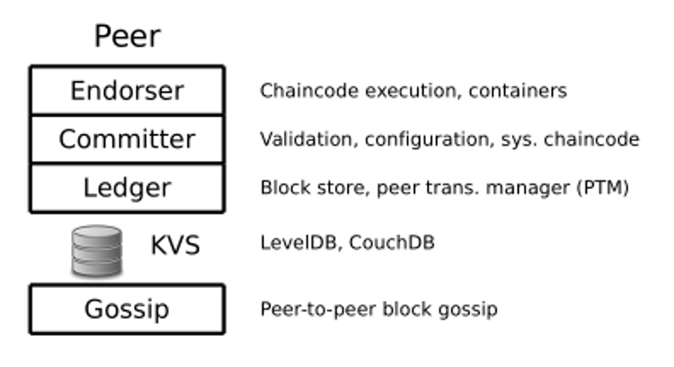

Hyperledger Fabric
传统架构：Order-Execute，先对节点排序，再执行。（排序是 共识。。。） 弊端：顺序执行会限制性能，另外需要满足确定性
Hyperledger Fabric是一种Execute-Order的架构。
Classification of blockchain:
区块链可以分为许可链和非许可链，其中许可链需要准入机制，而非许可链则不需要，一般对应的是公链。另外，许可链和非许可链的共识机制也有区别。 Permissioned blockchain(许可链) Permissionless blockchain(非许可链)
Hyperledger Fabric的流程：
- User（即APP）现将交易信息发给很多个Endorse Peer
- Endorse Peer 模拟交易之后会判断交易能否通过，然后分别将签名后的背书结果返回给User。
- User将交易信息以及背书信息发给Order 节点（只有当多数的背书节点认为交易能够通过时接下来才能有效地更新区块）。
- Order节点将信息广播给各个节点，每个节点验证背书信息没问题且user状态没问题，则进行区块的更新。 